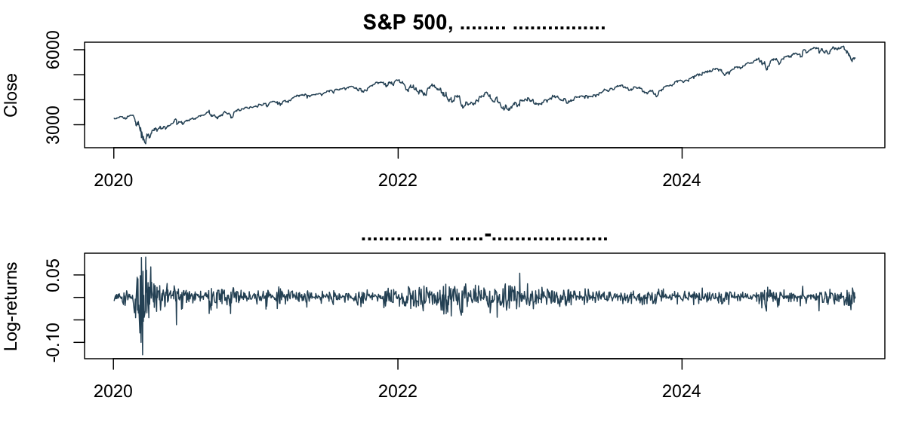
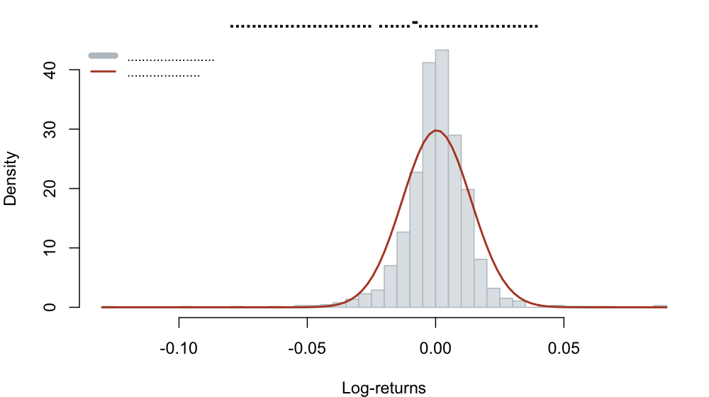
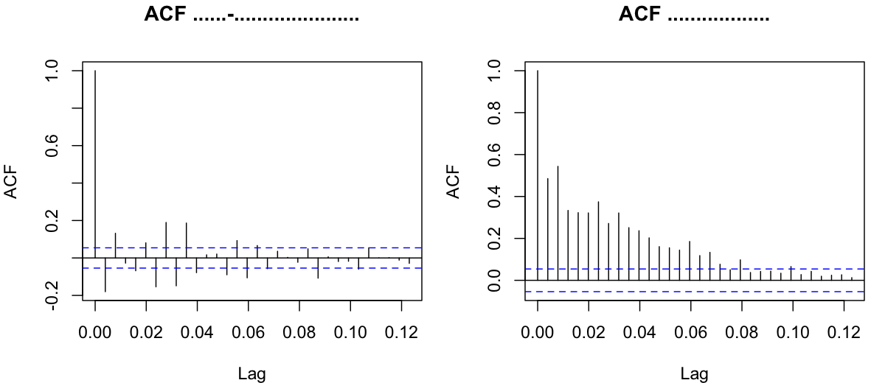
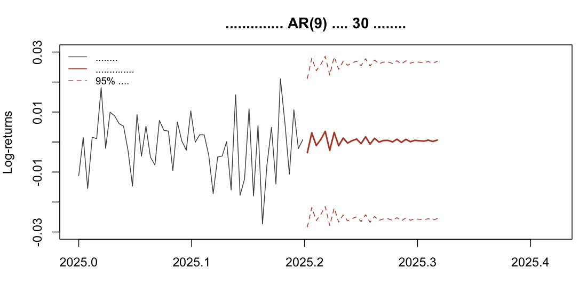

Ануар Беисов · данные 02.01.2020 – 21.03.2025 · 1312 торговых дней · R
Задача: понять, можно ли предсказать дневную доходность индекса S&P 500 и что вообще поддаётся моделированию на дневных данных. Разбор идёт по стандартному маршруту анализа временного ряда — от проверки стационарности до сравнения моделей и прогноза.
Дневные котировки индекса за пять лет, включая обвал марта 2020 года. Работаем
с логарифмическими доходностями log(Close_t) − log(Close_t−1).
| Показатель | Значение |
|---|---|
| Наблюдений | 1 312 |
| Цена закрытия: среднее | 4 327,8 |
| Цена закрытия: мин / макс | 2 237,4 / 6 144,1 |
| Средняя дневная доходность | 0,042 % |
| Стандартное отклонение (день) | 1,34 % |
| Годовая волатильность | 21,2 % |
| Асимметрия | −0,81 |
| Эксцесс (избыточный) | 14,09 |
| Худший / лучший день | −12,77 % / +8,97 % |
Отрицательная асимметрия и эксцесс 14 против нуля у нормального распределения — это тяжёлые хвосты: падения глубже и случаются чаще, чем предсказывает нормальная модель. Для оценки риска это принципиально.


| Ряд | ADF (p) | KPSS (p) | Вывод |
|---|---|---|---|
| Цена закрытия | 0,559 | < 0,01 | нестационарен |
| Лог-доходности | < 0,01 | > 0,10 | стационарны |
Оба теста согласны, причём проверяют противоположные гипотезы — это и есть причина моделировать доходности, а не цену.
Перебраны AR, MA и ARMA от простых до ARMA(5,5). Разброс между лучшей и худшей моделью — около 100 пунктов AIC, но внутри верхушки разница мизерная.
| Модель | AIC |
|---|---|
| ARMA(4,4) | −7 721,65 |
| AR(9) | −7 719,92 |
| ARMA(9,1) | −7 719,79 |
| ARMA(2,2) | −7 718,25 |
| ARMA(3,3) | −7 714,94 |
| ARMA(1,1) | −7 635,99 |
| AR(1) | −7 629,61 |
| MA(1) | −7 621,54 |
Первые пять моделей укладываются в 7 пунктов AIC — выбор между ними статистически почти безразличен. Дальше берём AR(9): у неё 7 из 9 лагов значимы на уровне 95 %, и она проще, чем ARMA(4,4), в интерпретации.
| Тест Ljung–Box (20 лагов) | p-value | Что значит |
|---|---|---|
| Остатки AR(9) | 1,00 | автокорреляции нет |
| Квадраты остатков AR(9) | < 2e−16 | кластеризация волатильности |
| Квадраты остатков GARCH(1,1) | 0,97 | волатильность описана |
Это ключевой момент разбора. AR(9) вычищает линейную зависимость из самих доходностей, но их квадраты остаются зависимыми: спокойные дни идут за спокойными, бурные — за бурными.

GARCH(1,1) с коэффициентами α = 0,142 и β = 0,824 закрывает этот эффект: сумма 0,966 означает высокую персистентность — всплеск волатильности затухает неделями, а не за день.

Точечный прогноз колеблется в пределах ±0,36 % и быстро затухает к среднему, тогда как 95 % доверительный интервал на тридцатый день составляет ±2,62 % — в семь раз шире самого прогноза.
Вывод: направление дневной доходности S&P 500 такими моделями не предсказывается, и любой точечный прогноз тонет в собственном доверительном интервале. Предсказуемо другое — волатильность: GARCH описывает её кластеризацию, и именно это даёт практическую пользу для оценки риска, стресс-тестов и VaR.
Отчёт собран по скрипту Final.R на данных SP500.csv; графики построены средствами базового R. Ссылки на код, данные и описание датасета — в карточке проекта на сайте.